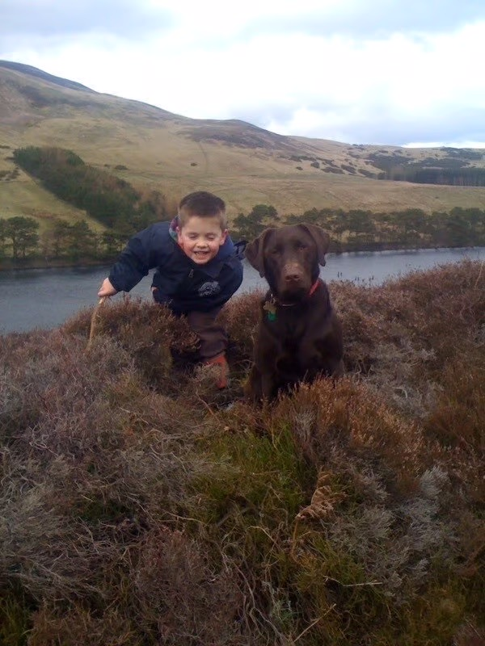
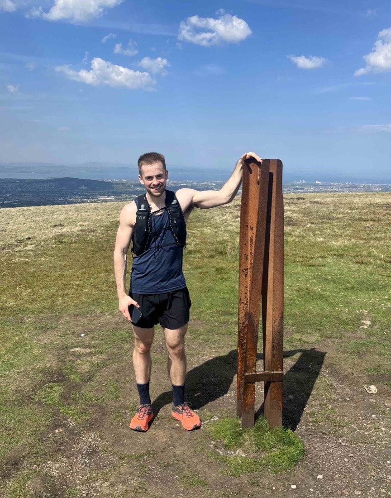

Twenty years exploring Edinburgh's hills
I'm Sebastian and I was born and raised in Edinburgh. I've been walking and running the local hills throughout most of my life!


How this started
I've been walking Edinburgh's hills, particularly the Pentland Hills, from a very young age, as we used to live very close by to them and had a chocolate Labrador called Ginty. I still get out on the hills regularly, usually a mixture of trail runs and long walks with my two chocolate Labradors, Daisy and Poppy.
Various friends started asking me to show them the Pentlands, and then some clients from my personal training business also became interested in seeing the Pentlands and more of Edinburgh, so I started running tours more officially.
My passion for the outdoors
I love walking, running and exploring the outdoors in the Scottish Highlands and abroad. I've completed a number of trail races including the Arrochar Alps, the Glenshee 9, and a UTMB in Switzerland. Recently I also did a 24-hour challenge climbing the 7 highest peaks in Scotland in 24 hours for charity. Currently I'm gradually working through all the Munros in Scotland: I am on 37 out of the 282!
How the tours work
Every tour is private. That means either one-to-one, or a small group you organise yourself. There will be no strangers, and you can walk at your own pace. I plan the route around who is coming and what the weather is doing, and I always have a lower-level alternative in mind before we set off.